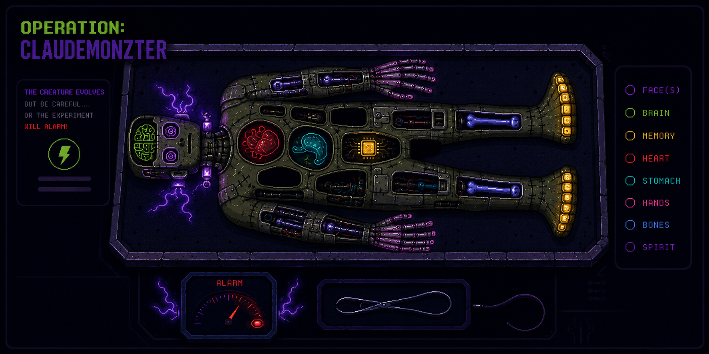

One human plugs a small graph of projects into a much larger graph of models. The system is told as a body — each organ a part of how it thinks, remembers, and feels. The live organs pulse, and they're sensitive: probe one and the alarm stirs. The dark bays are parts still on the bench.

The map grows as the system does. Four organs are live today; the dark bays on the table are real estate held for parts still on the bench. When one comes online, its organ lights up here — and starts reacting when you probe it.